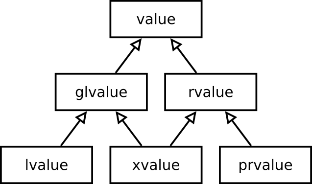

A jobbérték referenciák és a mozgatás szemantika
Czirkos Zoltán · 2019.03.19.
Másolások problémája, tulajdonos szemantika. Jobbérték referenciák, mozgató konstruktorok.
{kind=link}
A C++ tanórákon egyik leggyakrabban elhangzó szó a „másolás”. Másoló konstruktor, másoló értékadás, lemásoljuk a függvény visszatérési értékét, a tárolóba másoljuk a paraméterként kapott objektumot, és így tovább. Ez gyakran vicc tárgya is, de sajnos oka van. A verem alapú memóriakezelésnél rendszeresen funarg problémákba ütközünk, amiket valahogyan kezelni kell – ennek egyik módja a másolás.
A másolások elkerülésére a C++11-ben bevezettek egy újfajta referencia típust, a jobbérték referenciát. Ez az új nyelvi elem arra is jó, hogy tulajdonos szemantikát valósítsunk meg az objektumok által kezelt erőforrásainkhoz. Lássuk, hogyan is működik ez!
A sok felesleges másolás problémája
Gondoljunk egy egyszerű sztring osztályra! Ennek szeretnénk egy összefűző operátort. Az összefűzés a két operandust átveheti másolás nélkül, referenciával. A visszatérési érték azonban érték típusú kell legyen, semmiképpen nem lehet referencia, mert a függvénybeli lokális változó meg fog szűnni (upward funarg problem):
String operator+(String const &a, String const &b) {
String result{...};
...
return result;
}
c = a + b;A visszatérési értéket a sztring másoló konstruktora fogja inicializálni, amely 1) dinamikus memóriaterületet foglal, és 2)
átmásolja a paraméterként átvett result sztringből a karaktereket. Ezután a result objektumnak lefut a
destruktora, mivel az élettartama végére értünk.
A másoló konstruktor és a destruktor együttese miatt érezzük azt, hogy
feleslegesen dolgoztunk. Semmi értelme nem volt lemásolni a sztring dinamikus tömbjét, annak az objektumnak az erőforrását,
amelyiket már úgysem fogja használni senki. Jobban jártunk volna, ha a mindjárt megszűnő objektumtól egyszerűen elvettük
volna ezt az erőforrást: az újonnan létrejövő, visszatérési érték sztring dinamikus tömbjére mutató pointerét beállítjuk a
mindjárt megszűnő lokális változó sztring tömbjére. Ugyanez a helyzet a c = a + b sorban az értékadásnál: az értékadó operátor feleslegesen másol.
a karaktertömb másolása
a karaktertömb átadása
Ha jobban megnézzük a múltkori MyVector (dinamikus tömb osztály) átméretező függvényét, ott is hasonló
működéssel találkozunk:
T *newPData = static_cast<T*>(::operator new(sizeof(T) * newcapacity)); // 1
for (size_t i = 0; i != size_; ++i) {
new (&newPData[i]) T(pData_[i]); // 2
pData_[i].~T(); // 3
}
::operator delete(pData_); // 4Itt az 1-essel jelzett helyen új memóriaterületet foglalunk, a 4-essel jelzett helyen a régit felszabadítjuk. Ez még rendben lenne, de a 2-es sorban az objektumokat új helyre másoljuk, a 3-as sorban pedig a régi objektumokat megszüntetjük. Ezek olyan, időigényes műveletek, amelyekre a vektor átméretezésekor nem kellene szükség legyen. Nem átmásolni, hanem áthelyezni szeretnénk az objektumokat az új területre.
A tulajdonos szemantika problémája
Emlékezzünk vissza egy másik problémára is, a tulajdonos szemantikát megvalósító AutoPtr
osztályra (C++98-ban: std::auto_ptr). Ennél az volt a feladatunk, hogy megoldjuk,
a kezelt erőforrást, a dinamikusan foglalt objektumot az egyik AutoPtr átadja
a másiknak. Erre – jobb híján – a másoló konstruktort kellett használnunk, és a C++-os referenciák, paraméterátadási,
és konverziós szabályok miatt zűrös segédosztályokat és segédfüggvényeket írtunk:
template <typename T>
class AutoPtr {
AutoPtr(AutoPtr &the_other); /* nem konstans! */
class AutoPtrHelper; /* segédosztály */
operator AutoPtrHelper (); /* AutoPtr -> AutoPtrHelper */
AutoPtr(AutoPtrHelper helper); /* AutoPtrHelper -> AutoPtr */
};Mindezek azért kellettek, hogy az okos pointer helyes használatát (!) megengedje a fordító. Mert az alábbi sorokban létrejövő ideiglenes objektumot a nem konstans referencia paraméterű „másoló” konstruktor nem tudná átvenni:
AutoPtr<Shape> create_shape() {
return AutoPtr<Shape>{new Rectangle};
}
AutoPtr<Shape> p = create_shape();Ugyanakkor a helytelen használatot ezek nem akadályozzák meg, sőt a szokatlan viselkedésű „másoló” konstruktor komoly veszélyforrás:
void fv(AutoPtr<Shape>);
/* x elveszik, pedig másolásnak néz ki */
AutoPtr<Shape> y = x; // nem OK
/* x elveszik, pedig érték szerinti paraméterátadásnak néz ki */
fv(x); // nem OKA régi, C++98-as nyelvi eszközeinkkel nem tudjuk kifejezni a tulajdonos szemantikát: azt, hogy egy
AutoPtr ide-oda rakosgatható, de nem másolható.
Figyeljük meg egy kicsit jobban azokat a sorokat, amiket leírtunk! Vegyük észre, hogy a legtöbb esetben, amikor egy erőforrást mozgatni szeretnénk, akkor olyan objektumról van szó, amely épp a következő pillanatban meg fog szűnni. Egy temporális objektumról. Mozgatni kell a sztringek összefűzésénél, ahol a függvény visszatérési értékéből, a névtelen objektumból kivehetjük az adatokat, mielőtt megszűnik a pontosvesszőnél:
String operator+(String const &, String const &);
String a, b, c;
c = a + b; // mozgathatóViszont másolni kell akkor, ha változóról van szó:
String a, b;
a = b; // másolni kellMozgatni kell az erőforrást az AutoPtr objektumok között is, amikor
AutoPtr a függvény visszatérési értéke. Ez is temporális objektum:
AutoPtr<Shape> create_shape();
AutoPtr<Shape> p = create_shape(); // helyesAz AutoPtr-nél a helytelen használatokat viszont éppen arról ismerjük meg, hogy a másoló konstruktor
nem temporális objektumot, hanem változót kap:
void fv(AutoPtr<Shape>);
AutoPtr<Shape> y = x; // helytelen
fv(x); // helytelenVonjuk le a következtetést ezekből! Arra lenne szükségünk, hogy szintaktikailag meg tudjuk különböztetni egymástól a temporális és a nem temporális objektumokat. Ha a temporálisok és a nem temporálisok különféle típusnak számítanának (ez már eddig is így volt, C++98), és lehetne egy objektum temporális vagy nem temporális volta alapján választani két függvény közül (ez lesz az újdonság, C++11), akkor a fordító automatikusan kiválasztaná a függvények közül a megfelelő változatot:
class String {
String(TEMPORÁLIS String);
String& operator=(TEMPORÁLIS String); // áthelyezések
String(NEM_TEMPORÁLIS String);
String& operator=(NEM_TEMPORÁLIS String); // másolások
};
class AutoPtr {
AutoPtr(TEMPORÁLIS AutoPtr);
AutoPtr& operator=(TEMPORÁLIS AutoPtr); // tulajdonjog átadása
AutoPtr(NEM_TEMPORÁLIS AutoPtr) = delete;
AutoPtr&e operator=(NEM_TEMPORÁLIS AutoPtr) = delete; // tilos, fordítási hiba
};A változók és temporális értékek fogalmát már a C nyelv is ismerte. Ott azt mondtuk, hogy balértéknek (left-value, lvalue)
nevezzük az olyan kifejezések értékét, amely módosítható (modifiable), vagy másképpen, amelynek érték adható (assignable). Jobbértéknek (right-value, rvalue) pedig azt, ami nem módosítható. Például az i és a *j kifejezés értéke
balérték, mert módosítható. A 3 és az i + 4 kifejezés értéke pedig jobbérték, nem lehet neki értéket
adni:
int i;
int *j = &i;
i = 5; /* OK, balérték = ... */
*j = 6; /* OK */
3 = i; /* HIBÁS, jobbérték = ... */
i + 4 = 6; /* HIBÁS */Az elnevezések az értékadás művelet két operandusának sorrendjéből erednek: balértéknek kell lennie az értékadás bal oldalán, a jobbérték pedig csak az értékadás jobb oldalán állhat. A pongyola definíciókat később módosították, hogy inkább azt mutassa meg, temporális vagy nem temporális értékről van szó, mert ez fontosabb, hasznosabb megkülönböztetés. C++-ban egy temporális objektum is kaphat értéket (meghívható valamely tagfüggvénye, akár az értékadó operátora is). Az is elképzelhető, hogy egy balérték nem kaphat értéket. Ilyen egy konstans objektum.
Tehát az eggyel pontosabb definíciók a következők:
- Balérték (lvalue)
- Olyan kifejezés értéke, amely a memóriában megjelölt helyre hivatkozik. A balértéknek képezhető a címe az egyoperandusú
&operátorral.- Jobbérték (rvalue)
- Minden más.
Balérték lehet egy változó: int i, lehet referencia: int &j, de lehet akár egy pointer által
megjelölt hely is: *k. C++-ban balérték lehet egy függvény visszatérési értéke is, pl. int
&fv() esetén fv(). Balérték objektum tagváltozója is balérték. Ezek mind beleférnek a „címe képezhető”,
illetve „van egy kijelölt helye a memóriában” definícióba.
Természetesen attól a trükktől most tekintsünk el, ha letiltjuk vagy priváttá tesszük egy osztály
& operátorát, és amiatt nem látjuk az objektumai címét. Ez megtehető, de attól még az objektumai lehetnek
balértékek.
A C++98 nyelv ugyan megkülönbözteti egymástól a balértékeket és a jobbértékeket, de a függvénynév overload feloldó mechanizmusával ezt a megkülönböztetést nem tudjuk kihasználni. Nézzük meg, miért! Tegyük fel, hogy van három függvényünk:
void fv_val(String);
void fv_ref(String &);
void fv_cref(String const &);Egy String s változóval bármelyik függvény hívható a fentiek közül:
String s = "hello";
fv_val(s); /* OK, lemásolódik, a másolatot látja */
fv_ref(s); /* OK, s-t látja, meg is változtathatja */
fv_cref(s); /* OK, az eredeti s-t látja */Ha String const s változónk van:
String const s = "hello";
fv_val(s); /* OK, mert lemásolható */
fv_ref(s); /* HIBA, bár balérték, de a fv nem ígéri meg, hogy változatlan marad */
fv_cref(s); /* OK, mert ígéri, hogy nem fog változni */Ha pedig van egy jobbértékünk:
fv_val(String("hello")); /* OK, esetleg le is másolódik */
fv_ref(String("hello")); /* HIBA, nem balérték */
fv_cref(String("hello")); /* OK, nem másolódik, a temporálist látja */Mindez táblázatban összefoglalva lent látható. Az oszlopok az inicializálandó típusokat, a függvényparaméterek típusait mutatják, a sorok pedig azokat a lehetséges értéktípusokat, amelyekkel inicializálni szeretnénk ezeket a paramétereket.
| fv_val(X) | fv_ref(X &) | fv_cref(X const &) | |
|---|---|---|---|
| balérték | |||
| konstans balérték | |||
| jobbérték |
A probléma ezen jól látható: nem létezik olyan függvényparaméter-típus, amely csakis és kizárólag a jobbértékre illeszkedik. Pedig ahhoz, hogy a felesleges másolásokat el tudjuk kerülni, meg kell tudnunk mondani a paraméterként átvett objektumról, hogy balérték vagy jobbérték; mert csak akkor lophatjuk el tőle az erőforrást, ha egy névtelen temporális, azaz jobbérték típusú objektumról van szó.
Ezért vezettek be C++11-ben egy újfajta referencia típust, a jobbértékek referenciáját (rvalue reference). A jelük
&& – ezt gyakran ref-ref-nek mondjuk, magyarul és angolul is. (Nevezzük a régieket innentől balérték referenciának.)
A jobbérték referenciaként létrehozott változót ugyanúgy inicializálni kell, mint az eddigi referenciákat. A különlegességüket az
adja, hogy ez csakis jobbértékkel tehető meg, és ezért egy jobbérték referencia formális paraméterű függvénynév csakis jobbérték
argumentumra fog illeszkedni:
void fv_rref(String &&);
String s = "hello";
String const cs = "hello";
fv_rref(s); /* HIBA, nem jobbérték */
fv_rref(cs); /* HIBA, nem jobbérték */
fv_rref(String("hello")); /* OK, jobbérték */A táblázatot kiegészítve:
| fv_val(X) | fv_ref(X&) | fv_cref(X const &) | fv_rref(X &&) | |
|---|---|---|---|---|
| balérték | ||||
| konstans balérték | ||||
| jobbérték |
Az egyes típusok alapján „overload”-olhatjuk a függvényneveket is. Mint azt mindjárt látni fogjuk, ez a konstruktoroknál nagyon hasznos lesz.
#include <iostream>
#include <string>
void fv(std::string &s) {
std::cout << "non-const lvalue" << std::endl;
}
void fv(std::string const &s) {
std::cout << "const lvalue" << std::endl;
}
void fv(std::string &&s) {
std::cout << "rvalue" << std::endl;
}
int main() {
std::string s = "hello";
std::string const cs = "hello";
fv(s);
fv(cs);
fv(std::string("hello"));
}non-const lvalue const lvalue rvalue
A táblázat most sem teljes. Elvileg lehetséges még konstans jobbérték referencia és konstans érték típusú paraméter is, de ezek most nem lényegesek. A konstans jobbérték referencia automatikusan kiadódik következményként a típusrendszerből (bármi kaphat konstans minősítőt), csak nem jó semmire.
Innentől nyert ügyünk van: ha tudjuk, hogy a paraméterként átvett objektum jobbérték, akkor tudjuk, hogy az egy névtelen, temporális változó, amit senki más nem lát, és mindjárt meg fog szűnni. Ebből aztán levonhatjuk azt a következtetést is, hogy az erőforrását el lehet lopni tőle.
Írjuk meg a sztring osztályt, hogy lássuk, hogy működik ez! A szokásos állatorvosi lovunk két adattagot tartalmaz, a méretet és a dinamikusan foglalt tömböt a karakterekkel:
class String {
size_t size_;
char *data_;
};A memóriaterületet a konstruktorai foglalják, és a destruktora szabadítja fel.
String::String(char const *init) {
size_ = strlen(init);
data_ = new char[size_+1];
strcpy(data_, init);
}
String::~String() {
delete[] data_;
}Tudjuk, hogy aminek kell destruktor, annak kell másoló konstruktor és értékadó operátor is. Írjuk meg ezeket, hogy össze tudjuk majd hasonlítani őket a jobbérték referenciát használó párjukkal:
String::String(String const &the_other) {
size_ = the_other.size_;
data_ = new char[size_+1];
strcpy(data_, the_other.data_);
}
String& String::operator=(String const &rhs) {
if (this != &rhs) {
delete[] data_;
size_ = rhs.size_;
data_ = new char[size_+1];
strcpy(data_, rhs.data_);
}
return *this;
}Ezek a függvények balérték referenciát vesznek át a másolandó objektumra. Régen, amíg csak ilyen volt, nem tudhattuk, hogy egy balérték vagy jobbérték objektumot látunk (változót vagy temporálist), ezért kénytelenek voltunk lemásolni a tömböt.
Nem ez a helyzet a jobbértékeknél. A forráskódban csak azokat az objektumokat tudjuk hivatkozni többször, amiknek nevük van. A temporálisoknak nincs nevük, ezért ha egy jobbérték referencián keresztül látunk egy objektumot, akkor tudhatjuk, hogy csakis mi érjük el azt, senki más nem látja. Azt is tudhatjuk, hogy egy temporális, ami nemsokára meg fog szűnni, így aztán azt csinálunk vele, amit akarunk. A költséges másolás helyett egy sokkal egyszerűbb, hatékonyabb megoldást választhatunk: elvehetjük a tömböt a sztringtől, mert úgysem lesz már használva semmire. Az alább látható konstruktor nem másolja, hanem mozgatja az objektumot (move constructor), elvéve a paraméterként kapott sztring tömbjét:
String::String(String && the_other) noexcept {
size_ = the_other.size_;
the_other.size_ = 0;
data_ = the_other.data_; // elveszi a tömböt
the_other.data_ = nullptr;
}Észre kell venni, hogy a mozgató konstruktor String && paramétere nem konstans sztringet jelöl!
A másoló konstruktornál megszoktuk, hogy konstans a paraméter, de itt pedig pont nem lehet az, mert módosul az objektum,
amitől elvesszük az erőforrást.
Fontos, hogy a jobbérték referencián keresztül látott objektum (a lenti rajzon az a+b) élettartama a függvény idején
ugyan még tart, de utána vége lesz, és a destruktora le fog futni. A pointerét ezért le kell nulláznunk, különben az
objektumnak a destruktora felszabadítaná azt a tömböt, amit átvettünk tőle. Tehát a tömböt a mozgató konstruktorban elvesszük,
a jobbérték referencián keresztül látott objektumot pedig üres állapotban hagyjuk, hogy megszüntethető legyen (destructable state).
A mozgató konstruktor elnevezését ne értsük félre! Technikailag nem mozdul el egyik objektum sem a memóriában, sőt igazából két különböző objektumról van szó. Ez egy konstruktor, létrehoz egy új objektumot, a régi pedig még megmarad egy ideig. Ehelyett az erőforrás az, ami átadódik egyiktől a másikhoz: az erőforrás mozog, nem az objektum. Az alábbi ábra a memóriaképet mutatja egy ilyen helyzetben, a mozgatás előtt és után:
String c = a+b;A felső ábra azt az állapotot mutatja, amikor elindul a mozgató konstruktor. Ekkor a c objektumban
még memóriaszemét van, az a+b függvényhívás értéke pedig egy olyan sztring, ami az összefűzött szövegeket
tartalmazza. A konstruktor lefutása után a c objektum pointere mutat ugyanarra a karaktertömbre; a
the_other referencián keresztül látott a+b objektum pointere pedig null értékű lett.
Semelyik objektum nem mozdult el, se a sztring objektumok, se a karaktertömb. Csak ettől a ponttól kezdve a
karaktertömb már c kezelésében van, a+b-hez pedig már nem tartozik semmi.
Az értékadó operátor (move assignment operator) hasonlóan működhet. Az önértékadás ellenőrzését jobb benne hagyni, mert konverziókkal itt is előfordulhat az önértékadás – erről majd kicsit később.
String& String::operator=(String && rhs) noexcept {
if (this != &rhs) {
delete[] data_;
size_ = rhs.size_;
rhs.size_ = 0;
data_ = rhs.data_; // elveszi a tömböt
rhs.data_ = nullptr;
}
return *this;
}Az eddigi hármas szabályunkat, miszerint ha valaminek kellett 1) destruktor vagy 2) másoló konstruktor vagy 3) értékadó operátor, akkor mind a három kell, ezentúl egy ötös szabállyá alakíthatjuk. Azt kell mondanunk, ha egy objektum valamely speciális tagfüggvénye erőforrást kezel, akkor valószínűleg mind az öt speciális függvényt meg kell írnunk: 1) destruktor, 2) másoló konstruktor, 3) értékadó operátor, 4) mozgató konstruktor és 5) mozgató értékadó operátor. Az első hármat a helyes működés érdekében, az utolsó kettőt pedig a gyors működés érdekében.
Egy dologra figyelnünk kell ezeknél: kapjanak egy noexcept minősítőt. Hogy ez miért fontos,
arról később lesz szó. Az öt erőforráskezelő
függvény végleges formája a sztring esetében:
class String {
public:
String(String const &);
String(String &&) noexcept;
String& operator=(String const &);
String& operator=(String &&) noexcept;
~String(); /* ez is noexcept, de nem kell kiírni */
/* ... */
}Ha ezeket a függvényeket megírjuk, a fordító automatikusan választja majd ki őket a hívásoknál: ha balérték a paraméter, a másoló konstruktor hívódik, ha pedig jobbérték, akkor a mozgató konstruktor. Többet nem is kell foglalkozni velük! Így lehetséges az, hogy egy C++98-ban megírt, STL tárolókat, sztringet használó program egy egyszerű C++11-es újrafordítástól felgyorsul. A C++11 STL-je már tartalmazza a mozgató konstruktorokat és értékadó operátorokat, amelyek a fordító használni tud a jobbértékeknél. Ezzel egy csomó másolást megspórol, és ez nekünk semennyi többlet munkába nem kerül. Bátran adhatunk vissza bármekkora tárolót egy függvényből, egy-két pointer értékadásnyi időbe fog csak telni.
Vannak olyan osztályok, amelyek objektumai nem másolhatóak, mert a másolás értelmetlen lenne. Ilyen egy nyitott fájlt vagy egy hálózati kapcsolatot reprezentáló osztály, de ilyen a tulajdonos szemantikát megvalósító okos pointer is. Emlékezzünk vissza, a tulajdonos szemantika azt jelenti, hogy a kezelt objektumra pontosan egy darab okos pointernek kell mutatnia, többnek nem szabad. Ezért tilos ezeknél a másolás. A nem konstans balérték referenciát átvevő „másoló” konstruktort és segédosztályt kényszerből csináltuk, hogy az ilyen okos pointer objektumok áthelyezését, mozgatását meg tudjuk valósítani. Mert ha a másolásnak nincs is értelme ezeknél, az áthelyezésnek még lehet, sőt a tulajdonos szemantikájú okos pointernél éppen ennek van értelme. A függvény belsejében létrehozott okos pointert ki kell hozni a függvényből:
AutoPtr<Shape> create_shape() {
return AutoPtr<Shape>{new Rectangle};
}A másolást és a mozgatást most már meg tudjuk különböztetni.
A balértéket átvevő másoló konstruktort letiltjuk, a jobbértéket átvevő mozgató konstruktort pedig megírjuk úgy, hogy
a később megszűnő temporálistól átvegye a kezelt objektumot. Így működik az új nevű UniquePtr osztályunk,
így működik a C++11 szabványbeli std::unique_ptr is, amely a régi std::auto_ptr-t
leváltotta:
template <typename T>
class UniquePtr {
private:
T *ptr_;
public:
explicit UniquePtr(T *ptr = nullptr) : ptr_{ptr} {}
~UniquePtr() { delete ptr_; }
UniquePtr(UniquePtr const &) = delete; // nem lehet másolni
UniquePtr& operator=(UniquePtr const &) = delete;
UniquePtr(UniquePtr && the_other) noexcept { // a mozgatás viszont ok
ptr_ = the_other.ptr_;
the_other.ptr_ = nullptr;
}
UniquePtr& operator=(UniquePtr && rhs) noexcept { // értékadás jobbértékből is ok
if (this != &rhs) {
delete ptr_;
ptr_ = rhs.ptr_;
rhs.ptr_ = nullptr;
}
return *this;
}
};Így a mozgatás mindenhol működik, a másolás pedig mindenhol tilos:
UniquePtr<Shape> create_shape() {
return UniquePtr<Shape>{new Rectangle};
}
void fv(UniquePtr<Shape> p) {
}
int main() {
UniquePtr<Shape> p = create_shape(); /* OK */
UniquePtr<Shape> p2{p}; /* HIBA, másoló konstruktor lenne */
UniquePtr<Shape> p3;
p3 = p; /* HIBA, másoló értékadás lenne */
p3 = create_shape(); /* mozgatás, OK */
fv(p); /* HIBA, másoló konstruktor lenne */
fv(create_shape()); /* mozgatás, OK */
}Ezzel együtt lehetővé vált az, amit a régi std::auto_ptr-rel nem lehetett megcsinálni:
std::unique_ptr-eket, vagy std::fstream-eket tehetünk STL tárolókba.
Ha a tároló nem igényli azt, hogy a tárolt objektumok másolhatóak legyenek, hanem megelégszik a mozgató
konstruktor létezésével, akkor ezzel a típussal példányosítható a sablon.
Az
std::unique_ptr<>sablonA C++11 óta az
std::unique_ptr<>sablon része a szabványnak: tulajdonjoggal rendelkező okos pointert valósít meg. A régistd::auto_ptr<>pedig elavult, kerülendő.
Tekintsük az alábbi függvényt! A „mitírki” feladat kérdése egyszerű: ha az String osztálynak van másoló és mozgató
konstruktora is, melyik hívódik a kettő közül?
void foo(String && s) {
String other_s{s}; // másol vagy mozgat?
}A válasz elsőre talán meglepő: nem a mozgató konstruktor. Az s ugyanis egy változó, egy balérték, hiába
definiáltuk jobbérték referenciának. Miért? Mert a jobbérték referencia megadásával nem azt mondjuk, hogy jobbérték típusú változót
szeretnénk, hanem csak annyit, hogy egy olyan referenciát szeretnénk, amely egy már létező, jobbérték típusú objektumhoz van kötve
(the reference is bound to an rvalue).
A paraméterben lévő jobbérték referencián keresztül nevet adunk az objektumnak, amely néven keresztül többször is
hivatkozhatjuk. Márpedig aminek neve van, az balértéknek kell számítson.
Így aztán nem lehet temporális változó, legalábbis abban a hatókörben (scope) nem, ahol a referencia látszik. Bár az objektum, amit a
foo(String && s) függvény kap, eredetileg egy jobbérték kellett legyen, a függvény belsejében nem
jobbértéknek érzékeljük. A függvényen belül az s változón keresztül látott objektum nem temporális objektumként
viselkedőnek látszik, a függvényhívás egész időtartama alatt létezik. Így
az alábbi kódrészletben a másoló konstruktor hívódik:
void foo(String && s) {
String other_s{s}; // ez itt másolás!
}
foo(String{});Vegyük észre, hogy a függvényből visszatérve viszont megszűnik az ideiglenes objektum ideiglenes
neve is! Bár természetesen nem ettől szűnik meg az ideiglenes String objektum, hanem attól, hogy elérünk
a hívás utáni pontosvesszőig, tehát végére érünk annak a teljes kifejezésnek (full expression), amelyik a temporális
létrehozását eredményezte.
Miért fontos mindez ez? Mert gyakran előfordul, hogy egy jobbérték referencián keresztül látott objektumot szeretnénk egy
kifejezésben jobbértékként használni: például amikor egy leszármazott osztály mozgató konstruktorában szeretnénk az ős
mozgató konstruktorát meghívni. Ha nem teszünk semmit, akkor balértékként fogja látni, mert a referencia által az
objektum nevet kapott, márpedig akkor balértéknek számít. Ha jobbérték referenciává alakítjuk (annak tekintjük) egy
static_cast-tal, akkor viszont mozgatás történik majd:
void foo(String && s) {
String new_s{static_cast<String &&>(s)};
}A típuskonverzióval lényegében külön engedélyt adunk a fordítónak a mozgató konstruktor használatára.
Emlékeztető: a
decltypeVigyázat: egy kifejezés általában nem olyan típusú értéket ad, mint amilyennek a benne szereplő változót deklaráltuk. Emlékezzünk vissza a
decltypekapcsán említett deklarált típusra:decltype(s)és az effektív típusra:decltype((s)). Az előbbi azt mutatja, hogy a megadott név deklarációjánál milyen típust adtunk meg, az utóbbi pedig azt, hogy a bezárójelezett kifejezés milyen típusra értékelődik ki. Ezek eltérőek lehetnek.Például
class Complex { double re, im; }osztályComplex c1példánya esetén ac1.redeklarált típusadouble, effektív típusa pedigdouble &, egy balérték, a memóriában lévő valós szám referenciája, melynek a címe képezhető. Egy másik,Complex const c2példány esetén viszont az effektív típusdouble const &, azaz egy konstans szám. Hasonlóan nyakatekert egy függvény és egy változó kapcsolata:int foo()ésint x. Mindkettőtinttípusúnak deklaráltuk, viszont míg afoo()kifejezés jobbértéket, addig azxkifejezés balértéket ad. Ha sokszor hívjuk afoo()függvényt, mindig más integert kapunk. Ha sokszor hivatkozunk azxváltozóra a nevével, akkor viszont mindig ugyanazt.A jobbérték referenciaként deklarált dolgok lehetnek balértékek és jobbértékek is. Az
int&& foo()függvény visszatérési értékét jobbértéknek definiáljuk, és a hívás esetén is jobbértéket kapunk. Azint&& xtípussal definiált változó pedig egy balértéket ad. Ezt majd lentebb tisztázzuk.
A mozgatás kifejezésére a fenti static_cast helyett az std::move() függvénysablont szoktuk használni
(#include <utility>). Az alábbi programrész teljesen ugyanazt csinálja, mint a static_cast-os változat,
csak jobban látszik a kód olvasója számára a szándék:
void foo(String && s) {
String new_s{std::move(s)};
}Az move() függvény itt tulajdonképpen elrejti a neki paraméterként adott változó nevét. A visszatérési
értéke már egy névtelen érték, még ha tudjuk is róla, hogy az ugyanaz az objektum, mint a paramétere.
A függvény működése kicsit bonyolultabb (majd lesz róla szó), de legbelül igazából csak egy static_cast van.
Jobbérték referencia paraméterű függvényekben
A std::move() függvényt sok helyen fogjuk használni. Figyelni kell rá a mozgató konstruktorok és értékadó operátorok
írásánál, akár tartalmazott részobjektumot, akár az ősosztály részobjektumát szeretnénk mozgatni. Ha itt nem
írjuk ki, akkor nem mozgatás, hanem másolás történik:
Derived::Derived(Derived && the_other) noexcept
: Base(the_other) // HIBÁS
{
}Derived::Derived(Derived && the_other) noexcept
: Base(std::move(the_other)) // JÓ
{
}Vagy például amikor az előző órai dinamikus tömb osztályunk átméretezését írjuk. Az std::move() függvény itt is
jól kifejezi, hogy az objektumokat nem másoljuk, hanem mozgatjuk az új memóriaterületre. Persze a régi helyen lévő objektumok
destruktorait továbbra is meg kell hívnunk, mert azok az objektumok, amelyektől elvettük az erőforrást, még élő objektumnak
számítanak:
T *newPData = static_cast<T*>(::operator new(sizeof(T) * newcapacity));
for (size_t i = 0; i != size_; ++i) {
new (&newPData[i]) T(std::move(pData_[i])); // mozgatunk, nem másolunk
pData_[i].~T();
}
::operator delete(pData_);Eltárolt objektumoknál
A mozgató konstruktorok alapvetően megváltoztatják azt, ahogyan a paraméterátadásról gondolkozunk. Eddig mindig azt mondtuk, hogy nagyobb, lassabban másolható objektumokat konstans referenciával érdemes átvenni. Ez valójában már nem igaz így. Azokat az objektumokat, amelyeket egy függvény „elhasznál”, azaz eltárolja valahol, visszaadja a visszatérési értékében, esetleg lokális változóként módosítja, érdemes értékként átvenni. (Ezeknek az „elhasznált”, eltárolt vagy továbbadott paramétereknek a neve az angol szakirodalomban sink argument.)
Vegyünk erre egy nagyon egyszerű példát. Adott egy ember objektum, amelyik egy std::string típusú adattagot
tartalmaz, a nevét. Ezt a mozgató konstruktor ismeretében így írhatjuk le a legegyszerűbben, és egyben leghatékonyabban:
class Human {
private:
std::string name;
public:
explicit Human(std::string pname)
: name(std::move(pname)) // !
{}
};Vegyük észre, hogy a konstruktor paramétere érték, és nem referencia. Az ember osztály adattagként tartalmaz egy sztringet, vagyis egy ember objektum létrehozásakor mindenképp egy sztring objektumot is létre kell majd hozni. Ezért tud hatékony lenni ez a paraméterátadás: a sztring létrehozását amúgy sem lehet megúszni (szükség van rá az ember objektumhoz), így aztán mindegy, hogy az ember konstruktora végzi majd el a sztring másolását, vagy a konstruktor már egy kész sztringet kap, amelyből az erőforrást (a dinamikus tömböt) átteszi, átmozgatja az adattagba. Így jobb, ha a paraméter érték, mert ez arra is lehetőséget ad, hogy a paramétert is a mozgató konstruktor inicializálja:
std::string first_name, surname;
Human h1(first_name + " " + surname);Mi történik itt?
- Az összefűzések által előáll egy sztring, amelyik a létrehozott ember neve. Ez egy temporális objektum.
- A konstruktor hívásához előkészületként létre kell hozni annak paraméterét, a
pnameobjektumot. Ezt inicializálni kell, méghozzá a temporális objektummal. Ezért meghívódik a sztring mozgató konstruktora, az összefűzött karaktertömb átkerül apname-hez. - A konstruktorban a
pnamelokális változó, balérték, de amove()függvényhívás miatt jobbértéknek kezeljük. Ez a jobbérték inicializálja az adattagname-et, vagyis ismét a mozgató konstruktor hívódik; a karaktertömb átkerül aname-hez.
Azaz végülis a h1.name-nél ugyanaz a karaktertömb lesz, mint amit még az összefűzés állított elő. Valószínűleg
a fordító a mozgató konstruktor kétszeri hívását is ki fogja optimalizálni.
Erőforrások mozgatásánál
Az std::move() függvénnyel egy okos, gyors és általános std::swap függvényt lehet csinálni. A régi
változat három másolásból tudott megcserélni két változót, ezért érdemes volt specializálni a saját típusainkra. Az új változat
viszont a mozgatást használja, ezért ha van mozgató konstruktorunk és értékadó operátorunk, akkor nagyon gyors, és nem kell
osztályonként specializálni. A működése egyszerű: az a objektum erőforrásait áthelyezi a temp objektumba;
a b erőforrásait az a-ba, végül a temp, azaz eredetileg a erőforrásait a
b-be. Közben sehol nem történik másolás, csakis mozgatás.
template <typename T>
void swap(T &a, T &b) {
T temp = a;
a = b;
b = temp;
}template <typename T>
void swap(T &a, T &b) {
T temp = std::move(a);
a = std::move(b);
b = std::move(temp);
}Érdemes megfigyelni, hogy mindkét objektum, a is és b is, miután egyszer
már „kiürítette” őket a mozgató konstruktor és értékadó operátor, újra értéket kap. Például a temp
inicializálása után az a objektum üres, nincs nála kezelt erőforrás, mert az átkerült a
temp-be. De ettől még nem tűnik el; a második sor után az objektum újra „feléled”. A
jobbérték referenciát átvevő konstruktorokat és értékadó operátorokat ezért nem szabad azzal a feltételezéssel
megírnunk, hogy a paraméterként kapott objektum ténylegesen meg fog szűnni. Elvehetjük tőle az erőforrást, de lehet, hogy
később majd teljes értékű objektumként folytatja tovább az életét! Így nem csak megszüntethető (destructable)
kell maradjon, hanem olyan állapotban kell hagyni, hogy újra értéket is lehessen neki adni (assignable).
Benne viszont nincsen semmi, tehát ha az értékét használnánk, akkor az kódolási hiba lenne.
Mi is van az elmozgatott objektumban?
A fenti kijelentést érdemes még kicsit pontosítani.
A típusokat általában két csoportra bonthatjuk. Az egyik csoportba azok tartoznak, amelyek másolhatóak (van másoló konstruktoruk). Ezeknél a mozgatás igazából egy optimalizációs lehetőség. Ezeknél mozgatás helyett használhatunk másolást is bárhol, csak az lassabb. Mozgatni pedig olyan objektumból szoktunk, amit később már nem használunk – tehát tulajdonképp mindegy, hogy mi marad benne. Az optimalizáció kedvéért előírjuk, hogy a kliensek ne építsenek arra, hogy mi maradt az objektumban.
Azok az osztályok, amelyek objektumai nem másolhatóak, csak mozgathatóak, mint pl. a
unique_ptr, azért definiálnak mozgató konstruktort, mert így közelítik meg azt, hogy egy objektumot mozgatni lehessen. Valójában viszont csak a tartalom mozog, maga az objektum nem, úgyhogy ennek a műveletnek van egy mellékterméke, az üres objektum. Mozgatni viszont nem lehet belőle anélkül, hogy a tartalmát ne módosítanánk, hisz másoló konstruktor nincs: tehát elvégzünk rajta egy olyan műveletet, amelyik az állapotát megváltoztatja. Hogy mi a konkrét változás, azt akár rögzíteni is lehet; például aunique_ptresetében az eredeti pointerre mindenképpen meghívódik a.release()tagfüggény, ezért biztosak lehetünk benne, hogy null értékűvé változik.Azt mondjuk ezért általában, hogy az elmozgatott objektum érvényes, de a tartalma, állapota nincs specifikálva (valid but unspecified state). Valójában az „elmozgatva” állapot nem létezik, csak azért tekintünk így az objektumokra általában, mert nem mindig tudjuk, mi van bennük. Amikor igen, mint pl. a
unique_ptresetében, az csak speciális eset: ott a dokumentáció specifikálja a tartalmat is. Az a kijelentés viszont, miszerint az elmozgatott objektumon „már csak a destruktor és az értékadó operátor használható”, ugyan jó közelítése a dolgoknak, de nem mindig igaz.
Még egy fontos dolog az std::move()-val kapcsolatban. Ha egy függvényből egy lokális változóval
szeretnénk visszatérni, akkor nem kell használnunk. A visszatéréskor megszűnnek a lokális változók, ezért itt a
fordító már minden lokálisra úgy tekint, hogy mozgatni lehet belőle, külön kérés nélkül is:
String foo() {
String s;
...
return s; // továbbra is így kell
}String foo() {
String s;
...
return std::move(s); // rosszabb
}Ha odaírjuk a move()-ot, akkor csak rontunk a helyzeten. Emlékezzünk vissza, hogy az ilyen kódot a fordítók képesek
úgy optimalizálni, hogy eleve a visszatérési érték helyén hozzák létre azt a változót, amit a return utasításnál
megadunk (RVO – return value optimization). A move() miatt az önálló változónév helyett egy kiértékelendő kifejezést
fog látni a fordító, és kikapcsolja ezt az optimalizációt. Így ugyan a viszonylag gyors mozgató konstruktort kapjuk, de az még
mindig lassabb, mintha egyáltalán semmilyen konstruktort nem kellene meghívni. Tehát ebben a helyzetben mindent ugyanúgy kell
csinálni, mint eddig, és majd a fordító eldönti, hogy RVO-t vagy mozgató konstruktort használ.
Fontos, hogy ez nem jelenti azt, hogy sehova nem szabad return std::move(...)-ot írni. Ez csak a lokális változókra
érvényes, ott számít ez pesszimizálásnak. Ha az objektum máshonnan származik – pl. egy paraméterként kapott tömbből, akkor simán
előfordulhat, hogy ilyet érdemes írnunk.
A C-vel való kompatibilitás érdekében a C++ automatikusan generál másoló konstruktort és értékadó operátort az osztályainknak. Automatikusan ír destruktort is, amely az adattagok destruktorát meghívja. Felmerült, hogy esetleg automatikusan írhatna mozgató konstruktort is. Kiderült azonban, hogy ezt nagyon szigorú feltételekhez kell kötni.
Tegyük fel, hogy van egy láncolt listánk, amelynek gyakran le kell kérdezni a méretét. A méret lekérdezése hosszú időbe telik (végig kell lépkedni a láncon), ezért a listát becsomagoljuk egy új osztályba, amely figyeli a beszúrás/törlés műveleteket, számon tartva közben a méret változását is. Tesztelés céljából a destruktorban ellenőrizzük, hogy a nyilvántartott méret megegyezik-e a tényleges lista objektum által jelzett mérettel:
class IntListWithSize {
public:
void append(int i) {
l.append(i);
s++;
}
void remove_last() {
l.remove_last(i);
s--;
}
size_t get_size() const {
return s;
}
~IntListWithSize() {
check();
}
private:
IntList l;
size_t s = 0;
void check() {
assert(s == l.get_size());
}
};Namármost, ha ennek az osztálynak a fordító egy olyan mozgató konstruktort ír, amely az egyes adattagokat mozgatja, akkor
hibát fog jelezni a destruktor. A belső lista objektumból való mozgatás kiüríti l-t, míg az s
adattagból való mozgatás meghagyja annak értékét, mert a beépített adattagoknál a mozgatás a másolással egyenértékű.
Ezért a fordító csak akkor ír mozgató konstruktort és mozgató értékadó operátort, ha:
- nincs a felhasználó által írt másoló konstruktor, sem destruktor,
- nincs a felhasználó által írt másoló vagy mozgató értékadás,
- nincsen valami miatt implicit törölve (például mert az egyik adattagé törölve van).
Így ezekben az esetekben magunknak kell írnunk ilyen függvényeket. Vagy ha tudjuk, hogy a fordító
által generált jó lesz, az = default jelzéssel visszahozhatjuk.
A C++98-ban elég volt balértékeket (lvalue) és jobbértékeket (rvalue) megkülönböztetni. A mozgató konstruktorok végett bevezetett jobbérték referenciákkal együtt azonban egy kicsit bonyolultabbá vált a helyzet.
A mozgatás legfontosabb szabálya az, hogy mozgatni csak akkor szabad, ha az teljesen biztonságos. Minden egyéb
esetben meg kell elégedni a másolással. Tekintsük az alábbi programrészt! Ebben a foo() függvénynek
X && típusú a visszatérési értéke, pont ugyanolyan, mint amilyen az std::move()-é is:
X && foo() {
/* ... */
}
X && x_refref = foo();
X x1 = val_refref; // másolás? mozgatás?
std::cout << val_refref;
X x2 = foo(); // másolás? mozgatás?Amikor először felmerült a jobbérték referenciák ötlete, akkor úgy gondolták a nyelv tervezői, hogy az első szövegbuborékkal
jelölt a sorban mozgatást kell végrehajtani. Az x_refref jobbérték referenciának lett definiálva, tehát az
x1 konstruktora jobbértéket kap, így érveltek. De a tapasztalat megmutatta, hogy ez nem működhet így, mert
aminek neve van, az többször is hivatkozható; ha mozgatás történne abban a sorban, akkor a kiírásnál elhasalna a program.
Ezért hozták azt a szabályt, hogy a jobbérték referenciának definiált változók balértéknek számítanak. Innentől kezdve viszont
nem lehet azt mondani, hogy az X && mindenhol ugyanazt jelenti. Így most különbözik egymástól a
foo() függvény által visszaadott jobbérték referencia, és az x_refref változó, pedig az is jobbérték
referencia. A foo() függvény visszatérési értékéből lehet mozgatni (a második buboréknál a mozgató konstruktor
hívódik), az x_refref-ből viszont nem (az első buboréknál másolás történik). Pedig mindkettő típusa X
&&.
A névvel rendelkező jobbérték referenciák egyértelműen balértékek. Már csak a név nélküli jobbérték referenciáknak kellene
valamilyen nevet adni, hogy beszélni is lehessen róluk. A foo() visszatérési értéke biztosan nem balérték, mert
mozgatni lehet belőle. Ugyanakkor nem is jobbérték, mert referencia lévén, képezhető a címe.
Márpedig ha ez nem is balérték és nem is jobbérték, akkor valami új dolog kell legyen. Egy olyan értékről van szó, ami balértékként működik, kivéve azt az egy szempontot, hogy mozgatni lehet belőle, azaz hogy jobbérték referencia köthető hozzá. Ezért elnevezték xvalue-nak (expiring value). Az expiring szó egy megszűnő, élettartama végén lévő objektumra utal.
Az xvalue típusú értékek azok, amelyek miatt két új kategóriát is megneveztek. A prvalue (pure rvalue) nevet adták azoknak az értékeknek, amelyekre régebben egyszerűen rvalue-ként hivatkoztunk; a glvalue (generalized lvalue) pedig az xvalue-k és lvalue-k összefoglaló neve.
Az egyes típusok tulajdonságai és példák:
- lvalue = left value
- Nem temporális objektum, aminek címe képezhető. Például egy változó, aminek neve van:
i, egy dereferált pointer:*p, vagy egy balérték referencia visszatérési értékű függvény értéke:int & foo(). - xvalue = expiring value
- Amelynek erőforrásai mozgathatóak, és címe is képezhető. Például
az
int && foo()függvény értéke. - prvalue = pure rvalue
- Amit eddig jobbértéknek neveztünk; egy temporális objektum vagy egy érték, ami nem tartozik objektumhoz.
Például az
int foo()függvény értéke, vagy a literálisok:5,true,-3.4e7,nullptr. Egy prvalue nem lehet polimorf, a típusa mindig az objektum tényleges típusával egyezik meg. Ezek lényegében azok a kifejezések, amelyek egy objektumot inicializálnak. - glvalue = generalized lvalue
- Minden kifejezés, amely kiértékelése eredményeképp egy memóriahelyet kapunk; tehát
ami lvalue vagy xvalue. Ez polimorf lehet, a tényleges objektum lehet más típusú, mint a kifejezés típusa (pl.
ShapereferenciáhozCircleobjektum). - rvalue = right value
- Amiből mozgatni lehet: egy xvalue vagy egy temporális objektum.
Még lesz egy előadás, ahol a jobbérték referenciákról szó lesz. Az alábbi írásokban egyelőre nem lényegesek azok a részek,
ahol „perfect forwarding”-ról van szó, vagy sablon függvényekről, amelyek T && sablonparaméterrel
rendelkeznek.
- Thomas Becker: C++ Rvalue References Explained.
- Howard E. Hinnant, Bjarne Stroustrup, and Bronek Kozicki: A Brief Introduction to Rvalue References.
- rpz: http://kukuruku.co/hub/cpp/ref-qualified-member-functions.
- Sean Parent: Inheritance Is The Base Class of Evil.
- Herb Sutter: Move, Simply.